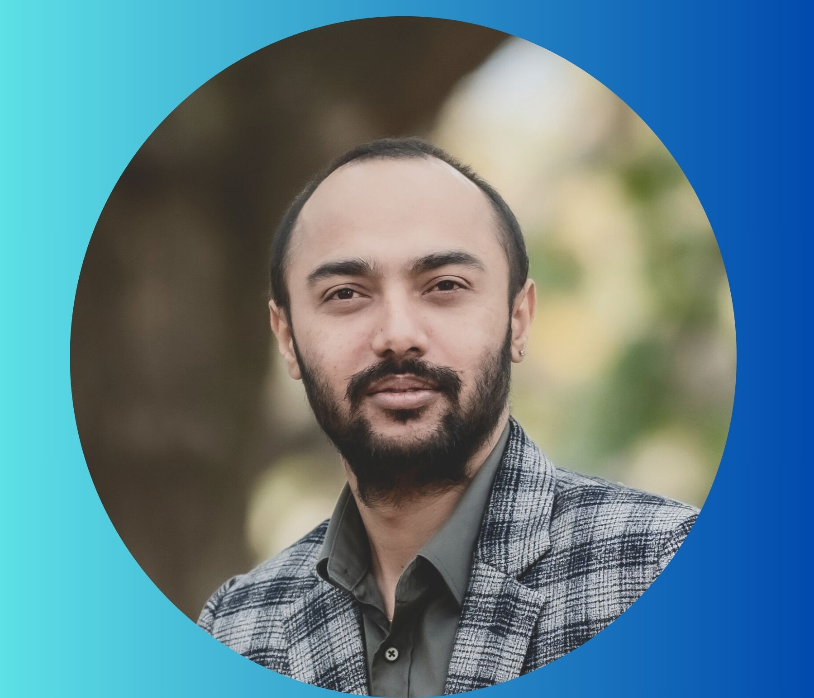

// Hello, World. I'm
Network Engineer · Security & Automation
Building resilient, secure, and automated network infrastructure across enterprise environments. 4+ years delivering 99.9% uptime SLAs across 500–1,000 endpoints.

// 01. about
I'm a Network Engineer and IT Infrastructure Consultant based in Canberra, ACT — with 4+ years of enterprise experience across LAN/WAN design, network security, cloud connectivity, and infrastructure automation.
I specialise in building and hardening network environments that are both resilient and compliant — from Cisco routing and switching to Palo Alto NGFW implementation and Wazuh SIEM deployment.
My automation background spans Ansible playbooks, Python, and PowerShell — with a proven track record of reducing maintenance windows by ~40% and eliminating manual configuration drift across client fleets.
CCNP-certified, with a strong foundation in compliance frameworks including Essential Eight and CIS Benchmarks. Currently open to enterprise network engineering roles across government, defence, and private sector environments.
// 02. skills
// 03. experience
// 04. projects
// 05. certifications
// education
// 06. contact
I'm open to enterprise network engineering roles, consulting engagements, and collaboration — particularly across government, defence, and enterprise environments in Australia.
Whether you have a project in mind or just want to connect, feel free to reach out via any of the channels below.